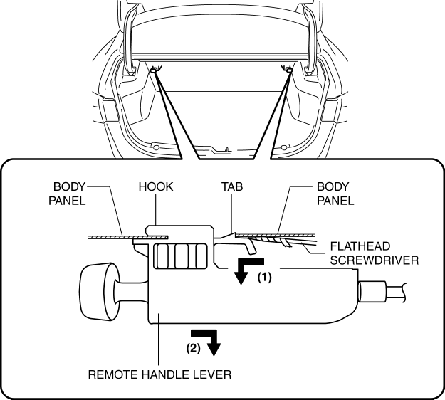
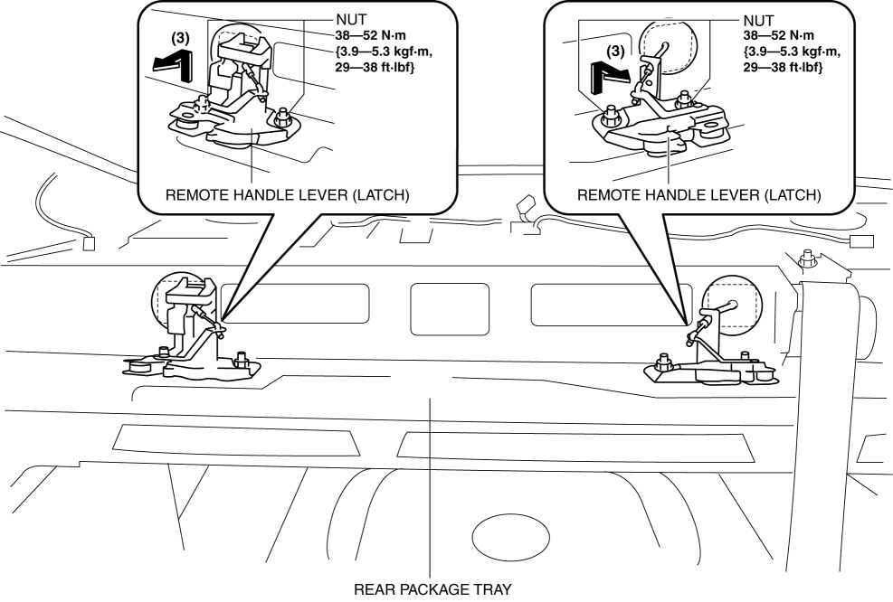

< Previous
Next >
2014 -
Mazda6 -
Body and Accessories
REMOTE HANDLE LEVER REMOVAL/INSTALLATION
1. Fold the rear seat back.
2. Open the trunk lid.
3. Move the flathead screwdriver wrapped in protective tape in the direction of the arrow (1) shown in the figure and disengage tab.

4. Remove the remote handle lever while pulling the hook in the direction of the arrow (2) shown in the figure.
5. Disconnect the negative battery cable. (See NEGATIVE BATTERY CABLE DISCONNECTION/CONNECTION [SKYACTIV-G 2.5].)
6. Remove the following parts: a. Rear seat cushion (See REAR SEAT CUSHION REMOVAL/INSTALLATION.)
b. Rear side seat back (See REAR SIDE SEAT BACK REMOVAL/INSTALLATION.)
c. Tire house trim (See TIRE HOUSE TRIM REMOVAL/INSTALLATION.)
d. C-pillar trim (See C-PILLAR TRIM REMOVAL/INSTALLATION.)
e. High-mount brake light (See HIGH-MOUNT BRAKE LIGHT REMOVAL/INSTALLATION.)
f. Rear package trim (See REAR PACKAGE TRIM REMOVAL/INSTALLATION.)
7. Remove the nuts.

8. Remove the remote handle lever in the direction of the arrow (3) shown in the figure.
9. Install in the reverse order of removal.
< Previous
Next >
© 2012 Mazda North American Operations, U.S.A.